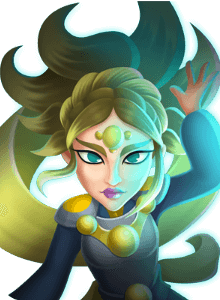

STORM
Summary:
Strong Mage unit capable of damaging and potentially killing multiple enemies across the map with stuns and large damage from her bouncing attacks and Main skill. Works best with other Electrocute units as her own Electrocute is less reliable.
Pros:
Strong Mage unit capable of damaging and potentially killing multiple enemies across the map with stuns and large damage from her bouncing attacks and Main skill. Works best with other Electrocute units as her own Electrocute is less reliable.
Pros:
- Attacks that bounce between up to 7 targets lets her hit enemies in the front and backlines simultaneously.
- High attack speed lets her get in multiple hits and chances for Electrocute and stun on enemies.
- Big damage on Main Skill that can hit enemies anywhere on the map as long as they're Electrocuted.
- Her own Electrocute is RNG dependent, so she's reliant on other Electocute units to apply it more consistently for her (investment needed).
- Electrocute:Thor, Hermes, Thundershot, etc. can apply Electrocute to different parts of the map, making her less dependent on applying her own Electrocute and allowing her to hit more enemies with her main skill.
- Stun Immunity:While units immune to Stun can still be Electrocuted, this can still hamper her utility.
- Multi-population:Multi-population units can eat the bounce on her attacks, making it more difficult to hit other priority targets.
- Assassins: Can remove her before she causes much trouble.